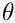
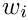
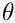
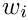
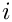

Generate site patterns by coalescent simulation
legosim: coalescent simulations within a network of populations
usage: legosim [options] input_file
where options may include:
-i <x> or --nItr <x>
number of iterations in simulation
-1 or --singletons
Use singleton site patterns
-U <x>
Mutations per generation per haploid genome.
-h or --help
print this message
Here, "input_file" should be in .lgo format, which describes the history of population size, subdivision, and gene flow. By default (i.e. if the -U option is not used), the output looks like this:
############################################################
# legosim: generate site patterns by coalescent simulation #
############################################################
# Program was compiled: Dec 25 2016 10:10:51
# Program was run: Sun Dec 25 10:13:47 2016
# cmd: ./legosim -i 10000 input.lgo
# nreps : 10000
# input file : input.lgo
# not simulating mutations
# excluding singleton site patterns.
# SitePat E[BranchLength]
x:y 39.7970280
x:n 38.9656878
y:n 40.8560014
Here, the "SitePat" column labels site patterns. For example, site pattern xy (denoted by "x:y" in this output) refers to nocleotide sites at which the derived allele is present in single haploid samples from X and Y but not in samples from other populations. This site pattern arises when a mutation strikes a branch that is ancestral only to the samples from X and Y. The average length of this branch in generations appears under "E[BranchLength]".
To simulate site pattern counts across an entire genome, use the -U option, whose argument give the expected number of mutations per generation per haploid genome. This argument should equal  , where  is the mutation rate per nucleotide site per generation, and  is the number of nucleotide sites sequenced per haploid genome, including monomorphic sites but excluding those that fail quality control. For example, adding
, where  is the mutation rate per nucleotide site per generation, and  is the number of nucleotide sites sequenced per haploid genome, including monomorphic sites but excluding those that fail quality control. For example, adding -U 18 to the command above led to the following output:
############################################################
# legosim: generate site patterns by coalescent simulation #
############################################################
# Program was compiled: Dec 25 2016 10:10:51
# Program was run: Mon Dec 26 09:31:59 2016
# cmd: ./legosim -i 10000 -U 18 input.lgo
# nreps : 10000
# input file : input.lgo
# mutations per haploid genome: 18.000000
# excluding singleton site patterns.
# SitePat Count
x:y 770
x:n 713
y:n 677
Now, the 2nd column is labeled "Count" rather than "E[BranchLength]" and gives the simulated count of each site pattern across the genome as a whole. It is calculated by sampling from a Poisson distribution with mean , where and are as described above, and  is the average branch length as reported without the
is the average branch length as reported without the -U option. This Poisson model treats nucleotide sites as independent, ignoring linkage disequilibrium. The counts it provides are correct in expectation, but their variances in repeated runs of the program are probably too small.
- Copyright
- Copyright (c) 2015, 2016, Alan R. Rogers rogers@anthro.utah.edu. This file is released under the Internet Systems Consortium License, which can be found in file "LICENSE".